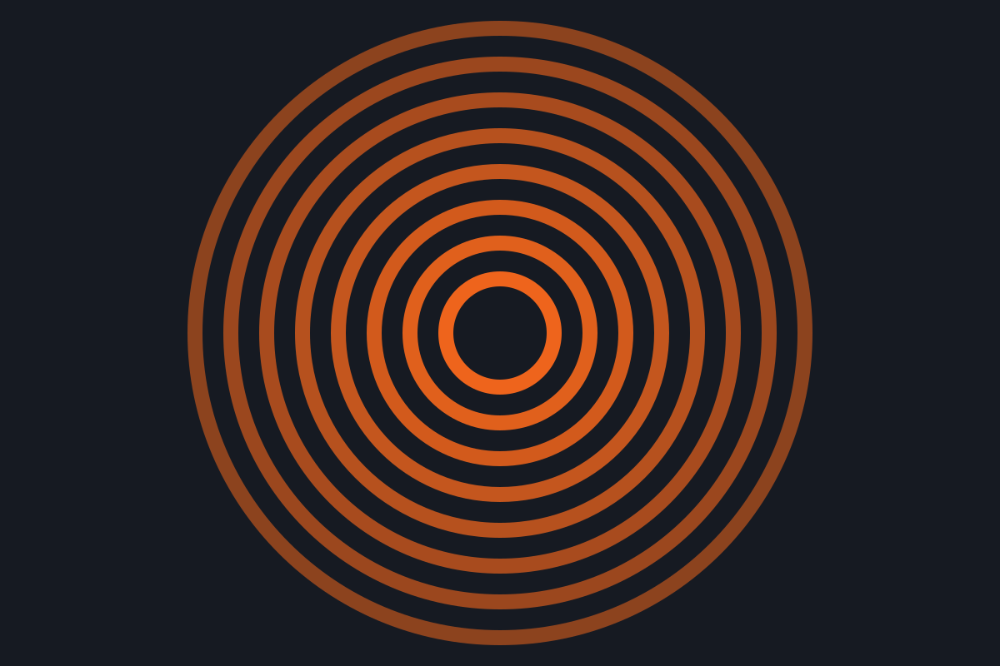
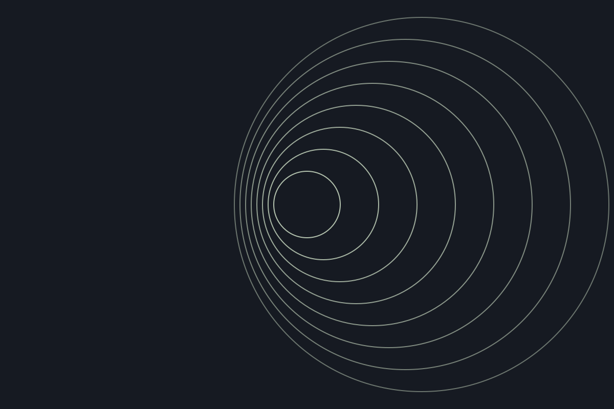
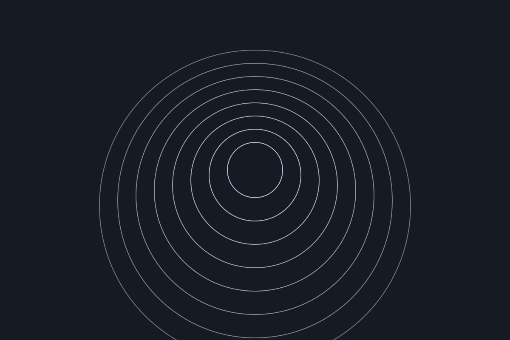

Circle / Concepts
An open field
of possibilities.
Self-initiated studies in form, rhythm, and interaction. These are fictional concepts, with no clients or commercial affiliations.
Explore the first study
Fictional concept / A study in visual identity
Orbit
Circular forms, generous space, and a single warm accent. An imagined identity system built around a simple gesture.

Fictional concept / A study in digital space
Field
An exploration of structure and flow. Quiet surfaces and offset forms suggest a more considered digital experience.

Fictional concept / A study in movement
Ripple
Repeating shapes turn a small change into a larger pattern. A visual experiment in rhythm and connection.
An idea is only the beginning